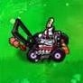
Trickedout
Mejora o cambia tu podadora de césped, por otra mejor.(Cualquier metro en el árbol de la sabiduría)
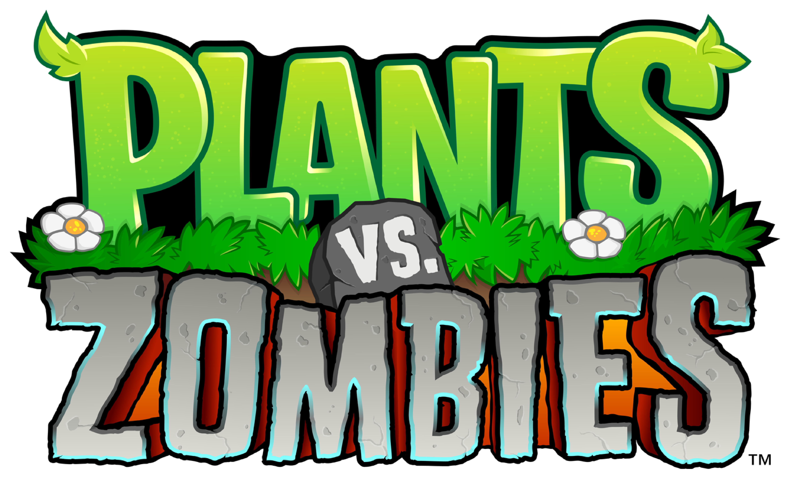
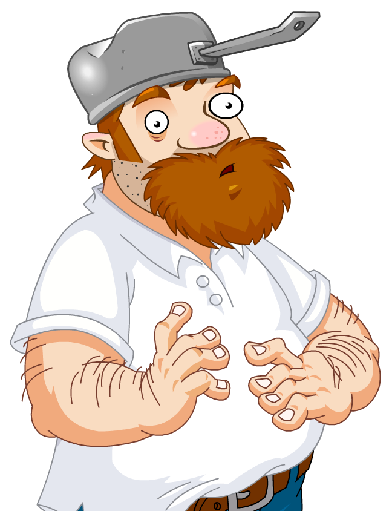
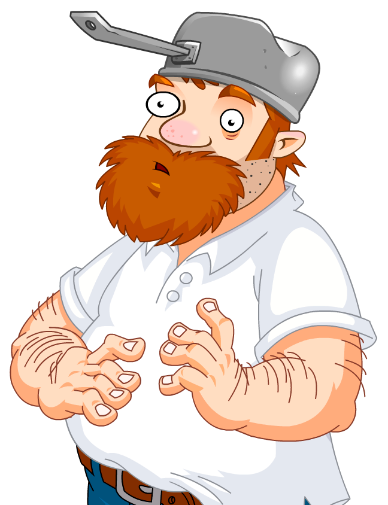

La tienda de Crazy Dave funciona como el sistema central de compras y progreso dentro de Plants vs. Zombies. Esta mecánica se habilita tras completar el nivel 3-4 del Modo Aventura y opera directamente desde el maletero de su características auto verde estacionado en la entrada.
La economía del juego se basa en recolectar las monedas que caen al derrotar zombis para intercambiarlas por mejoras estratégicas. Entre los artículos más importantes destacan la expansión de la barra de semillas hasta diez ranuras y la adquisición de defensas de emergencia para los escenarios, como los cortacéspedes de tejado o el rastrillo.
El catálogo ofrece además plantas exclusivas de mejora que no se consiguen de otra forma y deben colocarse sobre plantas convencionales durante las batallas, tales como la Metrallaguisante o la Imitadora. Así mismo, la tienda abastece la jugabilidad del Jardín Zen al vender fertilizantes, herramientas de cuidado y a la mascota Stinky para automatizar la recolección de dinero.
Todo el flujo de compra está completamente integrado con el humor absurdo de la saga, donde interacciones cómicas (como comprar un taco misterioso para entregárselo a Dave) sirven para expandir la mercancía disponible. Esta dinámica de gestión se complementa con una ambientación única marcada por la música relajante de Laura Shigihara.
Más allá de las herramientas básicas, el maletero de Dave guarda una selección exclusiva de vegetación avanzada. Estas cartas especiales no se plantan de forma directa, sino que funcionan como “evoluciones” que se colocan encima de tus plantas defensivas para llevar tu poder de ataque al máximo.
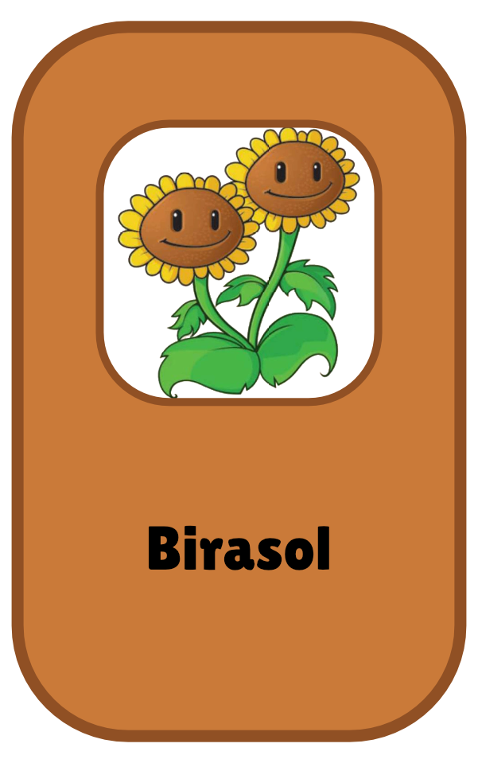
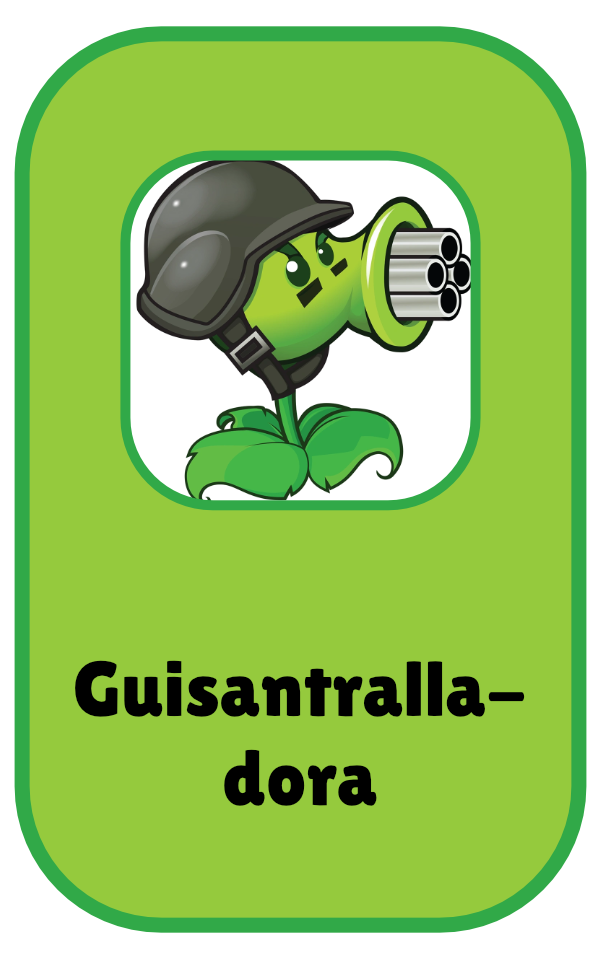
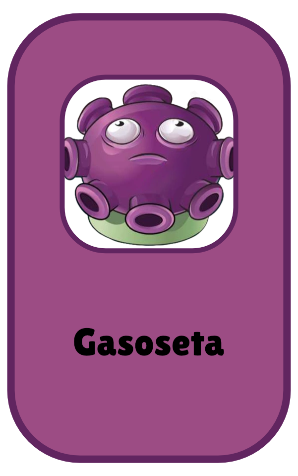
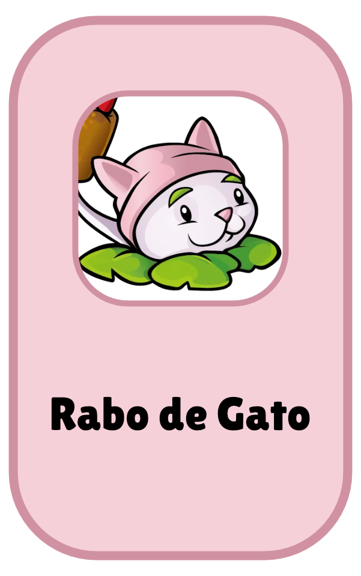
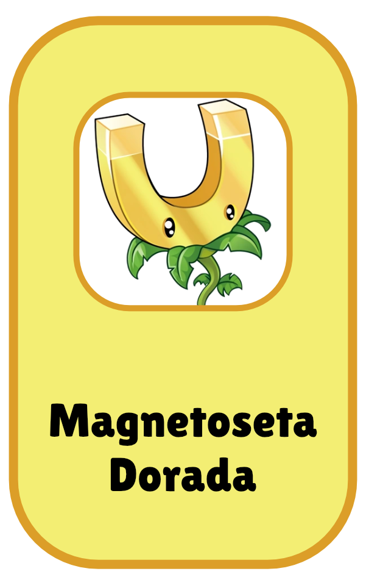
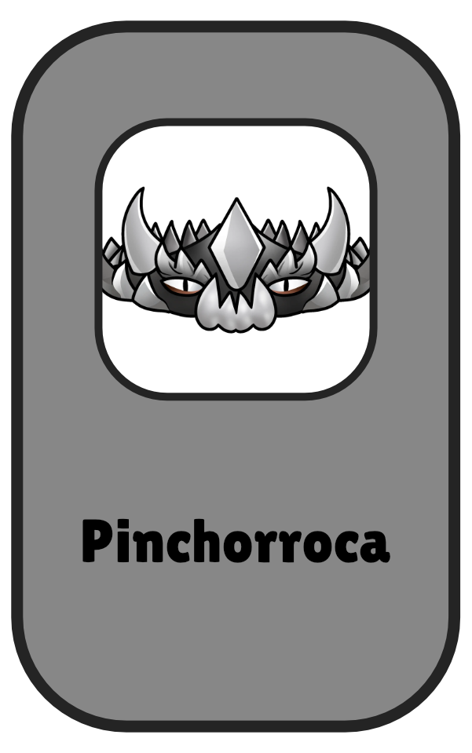
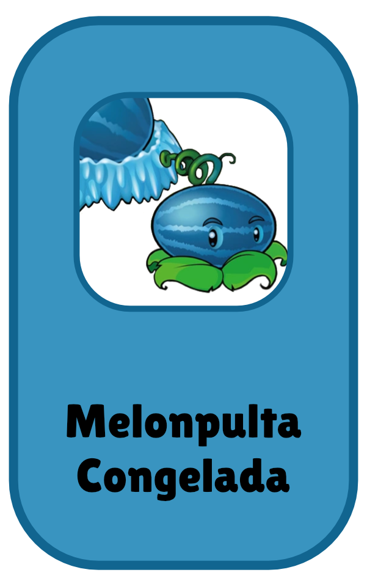
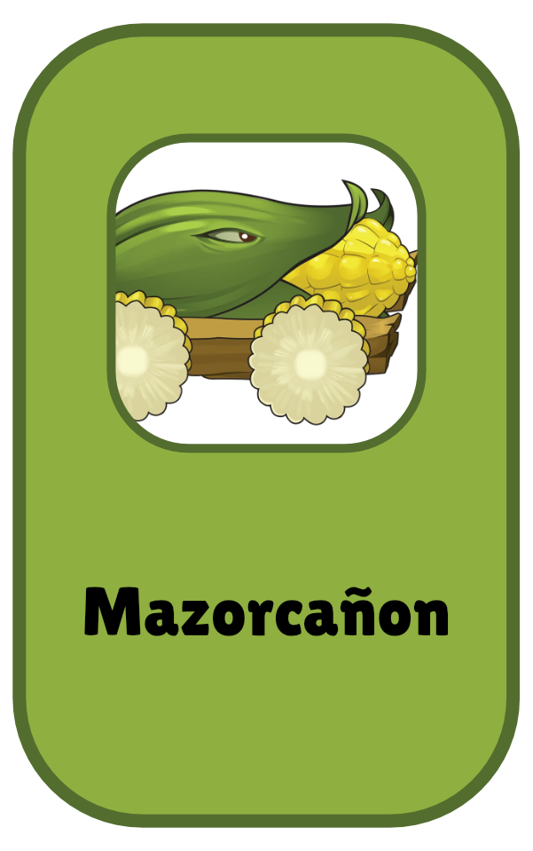
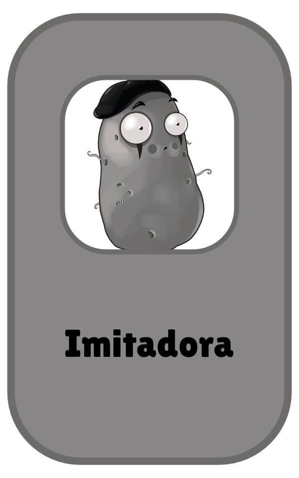
El Árbol de la Sabiduría (Tree of Wisdom) es un elemento único del Jardín Zen y comenzar a hacerlo crecer, debes cumplir con las siguientes mecánicas: Compra inicial: Disponible en la tienda de Crazy Dave por $10.000 monedas (requiere haber desbloqueado el Jardín Zen previamente). Crecimiento: Crece 1 pie por cada bolsa de Abono para Árbol que consume. Costo de mantenimiento: Cada bolsa de abono se compra en la tienda por $2.500 monedas.
Al alcanzar ciertas alturas clave, el árbol revela comandos especiales que se pueden tipear directamente en el teclado durante cualquier partida:
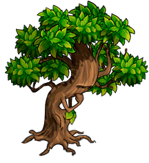

Mejora o cambia tu podadora de césped, por otra mejor.(Cualquier metro en el árbol de la sabiduría)
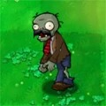
Pone bigotes a los zombis.(Cualquier metro en el árbol de la sabiduría)
Pone Lentes futuristas a los zombis. (Cualquier metro en el árbol de la sabiduría)
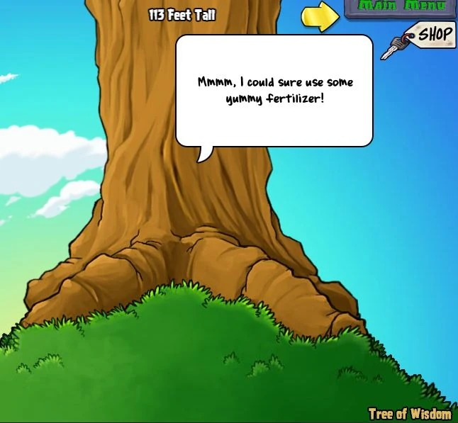
A lo largo de su crecimiento, el árbol comparte más de 80 diálogos útiles para el jugador:
Tácticas contra zombies: Detalla el daño de plantas explosivas y advierte sobre enemigos resistentes como los Zombistein.
Farmeo en Jardín Zen: Explica la probabilidad de obtención de plantas especiales según el modo de juego (piscina, niebla, tejado, etc.).
Easter Eggs: Enseña secretos interactivos del menú principal y de la pantalla de logros.
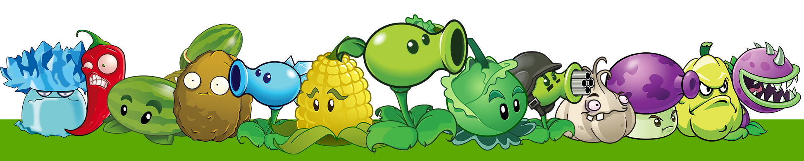